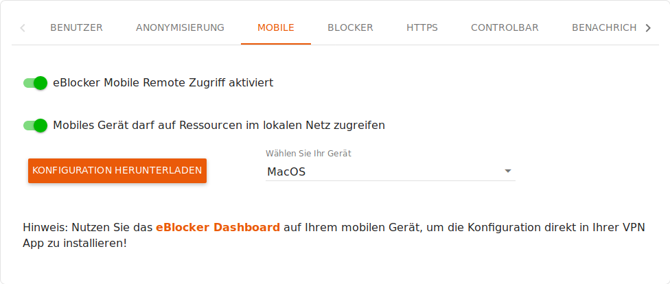

eBlocker Hilfe > FAQs > Mobile Funktion
Ab der eBlockerOS Version 2.2 können Sie auch von Unterwegs mit der eBlocker Mobile Funktion auf die Geräte in Ihrem Netzwerk zugreifen.
Dazu muss für jedes Gerät, welches über die eBlocker Mobile Funktion auf andere Geräte zugreifen darf, in den eBlocker Einstellungen Menü GERÄTE der Zugriff auf andere Geräte erlaubt werden.
Suchen Sie in dem eBlocker Menü GERÄTE aus der Geräteliste das betreffende Gerät heraus und klicken Sie es an.
In den Einstellungen für dieses Gerät klicken Sie dann auf den Reiter MOBILE und aktivieren dort den Schalter Mobiles Gerät darf auf Ressourcen im lokalen Netzwerk zugreifen

Wichtig:
Wir empfehlen dringt nicht von außerhalb Ihres lokalen Netzwerkes Ihren Router zu konfigurieren. Sie werden bei dem Neustart Ihres Routers die Verbindung zu Ihrem lokalen Netzwerk verlieren.